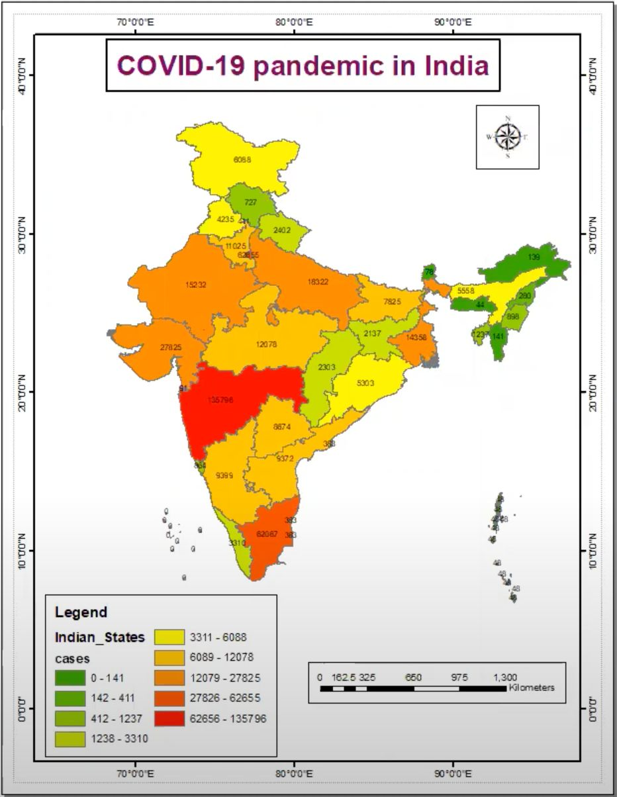
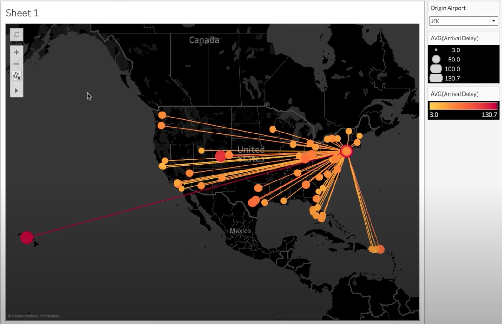
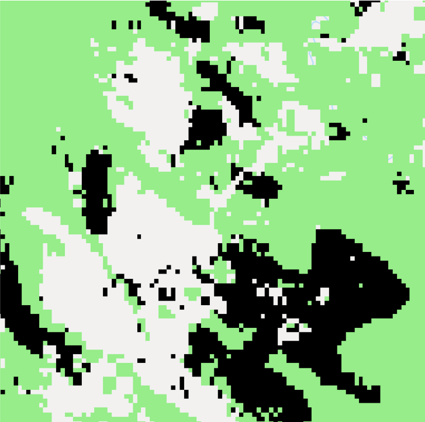
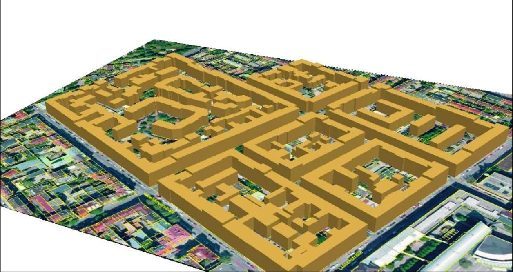
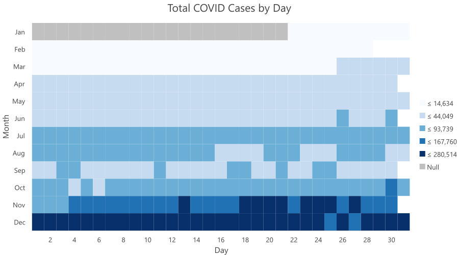
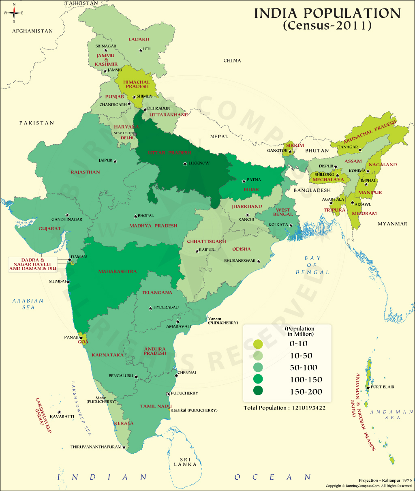

Automatic detection of rooftop solar PVs from satellite imagery using deep learning
In this project, I led the development of an automated system utilizing deep learning techniques to detect
rooftop
solar photovoltaic (PV) installations from satellite imagery. The primary objective was to streamline the
detection
process for solar PV systems across the expansive Salzburg region, spanning over 7000 square kilometers.
Through the
implementation of advanced deep learning algorithms, our system successfully identified and geolocated over
10,000
existing PV installations.
GitHub Repo
More details
Key Achievements:
Development of a custom deep learning pipeline leveraging state-of-the-art techniques, including Mask
R-CNN, for accurate detection of rooftop solar PV installations.
Achieved a high accuracy rate in detecting and geolocating over 10,000 existing PV systems across the vast
Salzburg region.
Contributed valuable insights into the distribution and density of rooftop solar installations, enabling
stakeholders to identify optimal locations for future solar energy projects.
Demonstrated proficiency in deep learning frameworks such as PyTorch and TensorFlow, along with expertise
in geospatial data analysis and visualization tools.
Generated actionable insights through the development of interactive web maps, providing stakeholders with
intuitive visualizations of solar PV distribution for informed decision-making.
Overall, this project showcased my ability to leverage cutting-edge technology and interdisciplinary
skills in deep learning and geospatial analysis to address real-world challenges in the renewable energy
sector.
US Airports on Webmap using leaflet
This project utilizes the Leaflet library to create an interactive web map displaying airports across the
United States. Each airport is represented as a marker on the map, with a popup containing detailed
information about the respective airport. The information provided in the popup includes essential data such
as airport name, location, longitude, and latitude. Users can click on individual markers to access this
information, enhancing their understanding of airport infrastructure and facilitating travel planning.
Through the integration of Leaflet's mapping capabilities and dynamic popups, this project offers an
intuitive and informative visualization of US airports accessible through a web browser.
Demo of Web Map
ArcGIS Dashboards for Real-time Wildfire Monitoring and Analysis
Developed a dynamic dashboard to visualize real-time wildfire data across the United States,
aiming to provide comprehensive insights for decision-making and information sharing.
The dashboard features a map displaying live feed layers of current wildfires, enabling users
to track their locations and statuses in real-time. Additionally, incorporated an indicator element
to monitor the total number of active wildfires and a serial chart element to identify regions with the
largest fire incidents.
Demo Dashboard

COVID-19 Thematic map of India
In this project, I undertook the task of creating a thematic map of India to visually represent the impact
of
COVID-19
across different regions of the country using ESRI ArcGIS. Through meticulous data collection and analysis,
I illustrated the
distribution
of COVID-19 cases, highlighting hotspots. By employing different symbology styles such as
graduated symbols, I was able to convey key insights into the distribution of COVID-19 cases. Through the
use of color gradients, size variations, and other visual
elements, I ensured that the thematic map was not only informative but also intuitive and easy to interpret
for a wide
audience.

Destination map using Tableau
The project involves creating destination maps using Tableau to visualize flight delays and cancellations
data from
the Department of Transportation in the U.S. The process includes connecting to the data, performing data
wrangling,
and creating a route by specifying start and end locations. Calculated fields are used to define the route
order.
Next, a visualization is created using latitude and longitude to generate a map, with route identifiers
serving as
detail. Average arrival delay is displayed on the map, and lines connecting origin and destination airports
are drawn
based on route order.
More Details
Filters are applied to focus on specific airports, and circles representing arrival delay at
destination airports are added. Circle size and color are based on arrival delay, and the background is
changed to
black for better contrast.
The project demonstrates how to analyze flight delays and cancellations data visually, allowing for
insights into
airport performance and variability in arrival delay depending on the destination. Destination maps help
visualize
migration patterns and the distribution of movement geographically.

Forest Cover Analysis using Google Earth Engine
This project conducts a comprehensive analysis of forest cover and tree loss in Bolivia utilizing the
Global Forest
Change (GFC) dataset within Google Earth Engine (GEE). Through JavaScript programming, key metrics such as
tree
cover percentage, forest area, and tree loss were calculated. Analysis between 2000 and 2001 revealed
significant
deforestation trends, with approximately 66.3 million hectares of forested areas meeting defined thresholds
in 2000 and
approximately 119,861 hectares of tree loss detected in 2001. This study underscores the importance of
remote sensing and
geospatial analysis for monitoring forest dynamics and informing conservation efforts.
GEE Script

Wildfire Analysis Using Sentinel-2 Imagery & ArcGIS API
This project demonstrates an analysis of wildfire using Sentinel-2 satellite imagery. The analysis is
performed using
the ArcGIS API for Python, leveraging geospatial data processing capabilities. The objective of this project
is to demonstrate how satellite imagery data, specifically Sentinel-2 imagery, can be utilized for wildfire
analysis. The analysis includes tasks such as detecting burned areas, assessing the extent of the wildfire,
and understanding the impact on the surrounding environment.
GitHub Repository

ILMIS: Integrated Land Management Information System
This project focuses on the development of an Integrated Land Management Information System (ILMIS)
through the creation of a Digital Cadastral Database (DCDB) to support comprehensive land information
management. Leveraging GIS technology such as QGIS & ArcGIS, the project undertook various spatial analysis
and visualizations to enhance understanding and management of natural hazards.
More Details
Key tasks included digitization, 3D modeling, climate modeling, population calculation, and real estate
evaluation. Terrain data, land use data, and weather data were integrated and analyzed to generate
insights into natural hazard risks, particularly flood risks. The project utilized hydrology analysis
techniques such as Fill, Flow Direction, Flow Accumulation, and Extract Streams to inform hazard
assessment. Additionally, the creation of a Digital Elevation Model (DEM) and generation of contours and
hillshade further enriched the spatial dataset. The outcomes of this project contribute to informed
decision-making in land management, urban planning, and disaster risk reduction efforts.

Road Extraction from Satellite Images Using UNet
This project investigates road surface extraction from high-resolution satellite images using the UNet
architecture. Trained on Deep Glove datasets resized to 256x256 pixels, the study demonstrates the model's
effectiveness in identifying roads despite reduced pixel dimensions. Findings suggest promising applications
in urban planning and transportation infrastructure management, showcasing the potential of deep learning
techniques in remote sensing.
GitHub Repository

COVID-19 Trends with ArcGIS Notebooks and ArcPy Charts
This notebook showcases the capabilities of ArcPy Charts within ArcGIS Notebooks for visualizing and
analyzing
COVID-19 data in the United States during 2020. ArcGIS Pro Charts provide a powerful toolset for uncovering
patterns,
trends, and relationships within spatial datasets. By integrating ArcPy Charts into Python workflows, users
can
automate data preparation, visualization, and analysis tasks, facilitating spatial data science workflows.
GitHub Repository

Classify land cover to measure shrinking lakes
Lake Poyang, China's largest freshwater lake, is experiencing significant shrinkage due to upstream water
diversion from the Yangtze River at the Three Gorges Dam. This environmental phenomenon poses threats to
local livelihoods, alters land cover dynamics, and adversely affects the regional economy.
More Details
To provide empirical evidence for advocacy efforts aimed at preserving the lake, this study conducts a
comparative analysis of satellite imagery from 1984 and 2014. By quantifying the surface area of Lake
Poyang across the two time periods, this research aims to elucidate the extent of its decline and
illustrate temporal changes. The findings offer valuable insights into the ecological impact of water
diversion projects and underscore the urgent need for conservation measures to safeguard Lake Poyang and
its surrounding communities.

Analysis and Design of multi-storey (G+4) building using AutoCAD & Staad Pro
This project involves the analysis and design of a multi-storey (G+4) commercial building, employing
AutoCAD for architectural design and Staad Pro for structural analysis. Beginning with architectural
planning in AutoCAD, the project progresses to structural analysis using Staad Pro, considering factors like
seismic forces and wind loads. Detailed design of structural elements follows, ensuring compliance with
safety standards and material properties. Through this integration of software tools, the project aims to
deliver a safe and efficient building design for commercial use.

Population Distribution Mapping of India Using ArcGIS
This project focuses on the creation of a population distribution map of India using ArcGIS, a powerful
geographic
information system (GIS) software. Leveraging population data sources such as census data or satellite
imagery, the
project aims to visualize and analyze the spatial distribution of population across different regions of
India. Through
the utilization of ArcGIS tools and techniques, including data visualization, spatial analysis, and map
design, the
project provides insights into population density, demographic trends, and urban-rural dynamics within the
country.